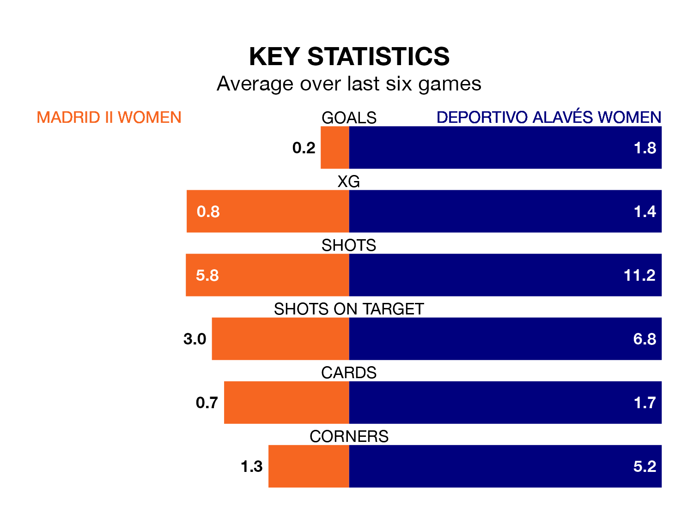

Madrid II Women welcome Deportivo Alavés Women on Sunday looking to pick up points to end their three-game losing streak.
Madrid II's struggles have left them with just one point from their last six Primera Federación Femenina matches, while their opponents have earned 11 from a possible 18.
Madrid II are 13th in the table after 15 games, of which they have won two and drawn two, earning eight points.
Deportivo Alavés are five places ahead of the home team in eighth, with five wins and five draws putting them on 20 points.
With eight goals in 15 games so far this season, Madrid II are the league's joint-second-lowest scorers with 0.5 goals per game. And they are conceding more than average, letting in 25 goals at a rate of 1.7 per game.
The visitors, meanwhile, are above average scorers, with 1.3 goals per game, compared to a league average of 1.2. They have conceded 1.1 goals per game.
Madrid II's last match was on January 21, a 2-0 loss against AEM Lleida Women.
Deportivo Alavés beat Atlético Madrid II Women 4-1 last time out, on Wednesday.
Updated: 08:51 (UTC), 25/01/24